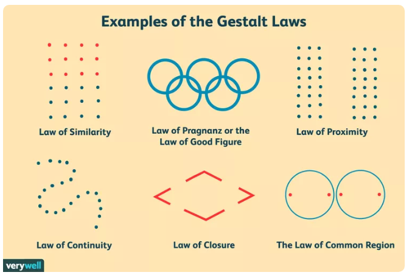

Wizualizacja danych to nie tylko prezentowanie liczb i faktów — to sztuka komunikacji wizualnej.
Aby przekaz był czytelny, intuicyjny i estetyczny, warto zrozumieć, jak ludzki mózg postrzega obrazy.
Psychologia Gestalt, rozwinięta na początku XX wieku przez niemieckich psychologów, bada sposób, w jaki postrzegamy całość, a nie pojedyncze elementy.
Jej główne założenie brzmi:
„Całość jest czymś więcej niż sumą jej części.”
W kontekście wizualizacji oznacza to, że odbiorca nie analizuje każdego punktu danych oddzielnie — lecz od razu dostrzega wzory, grupy, relacje i hierarchię.
Zrozumienie zasad Gestalt pozwala projektować wykresy, infografiki i interfejsy w sposób, który naturalnie prowadzi wzrok i wspiera interpretację danych.
Zasady Gestalt
Zasada bliskości (proximity)

Elementy znajdujące się blisko siebie są postrzegane jako powiązane.
Przykład:
Na wykresie punkty danych położone blisko siebie wydają się należeć do tej samej grupy. W praktyce: grupuj elementy wizualnie, zamiast stosować linie i ramki.
Zasada podobieństwa (similarity)
Elementy podobne pod względem koloru, kształtu czy rozmiaru tworzą grupę.
Przykład: Na mapie wszystkie niebieskie punkty mogą oznaczać jeziora, a czerwone — miasta. W praktyce: używaj spójnych kolorów i kształtów, aby ułatwić interpretację.
Zasada ciągłości (continuity)
Nasz wzrok podąża za liniami i krzywymi w sposób płynny — widzimy ciągłość, nie przerwy.
Przykład:
Na wykresie liniowym oko śledzi trend mimo drobnych przerw w danych. W praktyce: prowadź wzrok odbiorcy wzdłuż osi, linii lub narracji wizualnej.
Zasada domknięcia (closure)
Umysł „domyka” brakujące fragmenty, tworząc pełny obraz.
Przykład:
Trzy niepełne linie mogą być odczytane jako trójkąt. W praktyce: możesz sugerować kształty bez ich pełnego rysowania — minimalizm działa.
Zasada figury i tła (figure-ground)
Umysł oddziela obiekt (figurę) od tła.
Przykład:
Na slajdzie tekst o wysokim kontraście łatwo odróżniamy od tła. W praktyce: stosuj kontrast i hierarchię, by wskazać, co jest najważniejsze.
Zasada wspólnego kierunku / wspólnego losu (common fate)
Elementy poruszające się w tym samym kierunku są postrzegane jako powiązane.
Przykład:
Na animacji strzałki poruszające się w jedną stronę są widziane jako grupa. W praktyce: w wizualizacjach dynamicznych grupuj elementy przez ruch lub kierunek.
Zasada symetrii i porządku (symmetry & order)
Symetryczne, uporządkowane układy wydają się stabilne i harmonijne.
Przykład:
Symetryczny układ wykresu jest łatwiejszy w odbiorze niż chaotyczny. W praktyce: stosuj równowagę i osiową symetrię w kompozycji.
Podstawowe schematy percepcji wizualnej
Podstawowe schematy percepcji wizualnej, inaczej zmienne wizualne (ang. visual variables lub preattentive attributes) to cechy bodźców, które ludzki wzrok rozpoznaje automatycznie i błyskawicznie, zanim jeszcze zaczniemy świadomie analizować dane.
To bardzo ważny temat w wizualizacji danych, ponieważ od tych cech zależy, jak szybko i poprawnie odbiorca dostrzeże wzorce i różnice na wykresie.
Przetwarzanie informacji
Według najnowszych badań neurokongniwistycznych nasz mózg przetwarza informacje podświadomie, jeszcze zanim dokona na ich podstawie sądu.
Przykład: Infografika procesowa – strzałki i etapy ilustrują przebieg czasu lub działań.
Ruch / Zmiana w czasie (Motion / Temporal Change)
W animacjach lub interaktywnych wizualizacjach ruch może reprezentować trend, przepływ lub dynamikę.
Źródło: https://gganimate.com/
Przykład: Animowany wykres pokazujący zmiany danych w czasie.
Perspektywa / Skala (Perspective / Scale)
Pokazuje relatywne znaczenie lub kontekst – jak dane wpisują się w większą całość.
Rodzaje skal:
Narracja / Kontekst (Narrative / Context)
Włącza element opowieści – pozwala odbiorcy zrozumieć sens danych poprzez kolejność, emocje i kontekst.
To najwyższy poziom semantyczny — tworzy znaczenie, nie tylko strukturę.
Przykład: Storytelling w wizualizacji danych (np. interaktywny raport z danymi, w którym odbiorca odkrywa historię krok po kroku).
Cechy dobrej wizualizacji
Dobra wizualizacja to wizualizacja która:
Sprawia, że odbiorca potrzebuje mniej czasu na analizę zaprezentowanych danych.
Jest czytelna na pierwszy rzut oka. Osoba, która nie miała wcześniej styczności z prezentowanymi danymi, może je bez trudu zrozumieć.
Nie zakłamuje rzeczywistości poprzez niewłaściwe wyeksponowanie danych i wykorzystanie elementów graficznych.
Dobre praktyki tworzenia wizualizacji
Bądź uczciwy
Kiedy wizualizujesz dane , przede wszystkim powinieneś być uczciwy wobec swoich odbiorców.
Podczas tworzenia wizualizacji pamiętaj, aby :
Porównywać te same elementy w tym samym zakresie
Zachować odpowiednie proporcje ( zadbaj o to, aby żaden z elementów nie był dominujący , np. użycie wykresu 3D i wykorzystanie wyróżniającego koloru może sprawić, że wizualizacja będzie fałszowała dane; tak samo zmiana skali wykresu)
Dobierz odpowiedni wykres
Każdy rodzaj wykresu służy do analizy innego rodzaju danych. Te, do których jest przeznaczony, będzie prezentował w przejrzysty sposób, natomiast resztę będzie prezentował w sposób nierzetelny, np. do prezentacji danych zmiennych w czasie, lepiej zastosować wykres liniowy niż kołowy, dla danych geograficznych najlepiej użyć mapy itd.
Wykorzystaj właściwe skale
Znaczna większość wykresów składa się z jednej skali liczbowej i jednej kategorii wzdłuż osi.
Zastosowanie właściwej skali pozwoli wydobyć najważniejsze informacje z danych. Na przykład w przypadku śledzenia danych na osi czasu wybierz skalę interwałową, której interwały będą stanowić kolejne miesiące roku. Pamiętaj także, że skale ilościowe powinnny się zaczynać od 0.
Zastosuj odpowiednie kolory
Unikaj dużej ilości kolorów
Nie stosuj zbyt kontrastowych barw
Zwracaj uwagę na psychologiczne i kulturowe znaczenia kolorów
Intensywniejszych kolorów używaj do podkreślanie istotnych zależności
Spraw, aby wizualizacja była czytelna
Prostota wizualizacji poprawia czytelność - unikaj przeładowania danych w pojedynczej wizualizacji
Stosuj wspólną paletę kolorów dla całej wizualizacji
Do tekstów wykorzystuj proste czcionki (np. Arial, Tahoma)
Zachowaj proporcję między wielkością wizualizacji i wielkością jej opisu